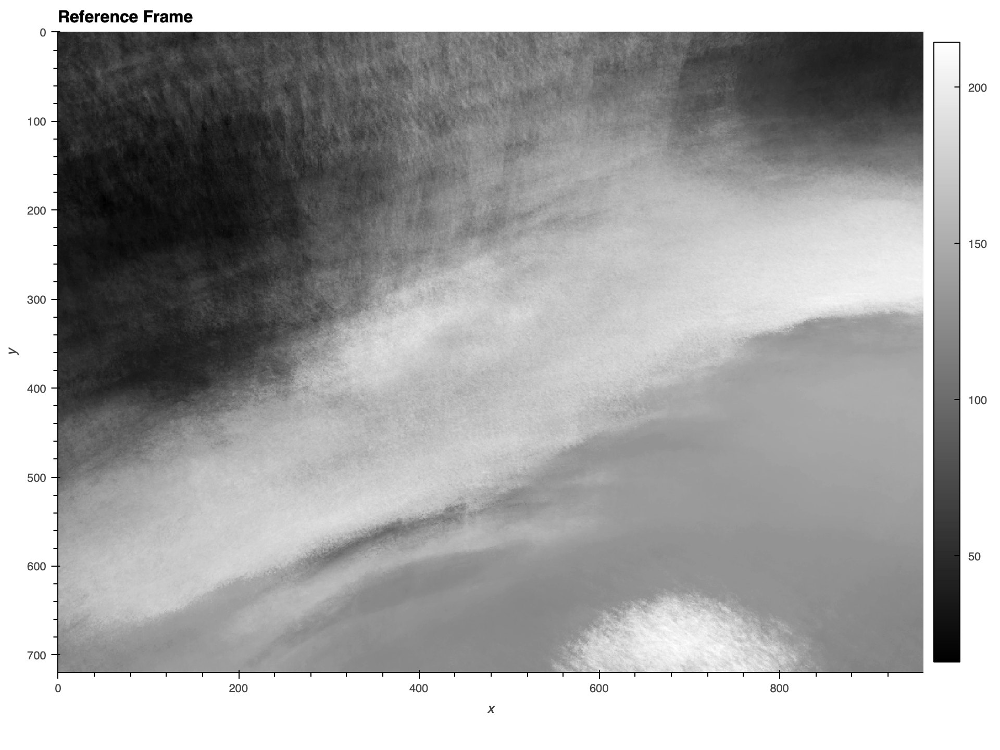
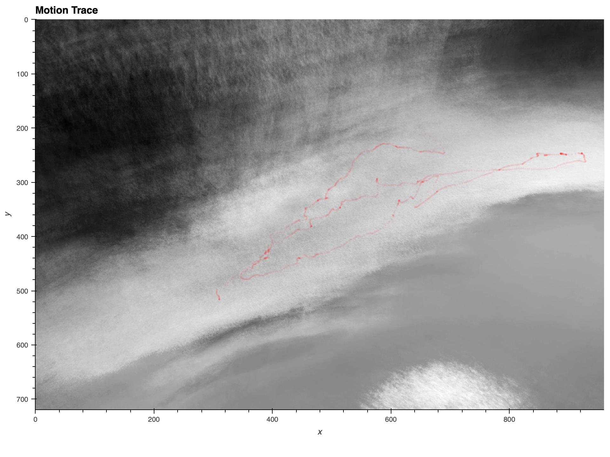
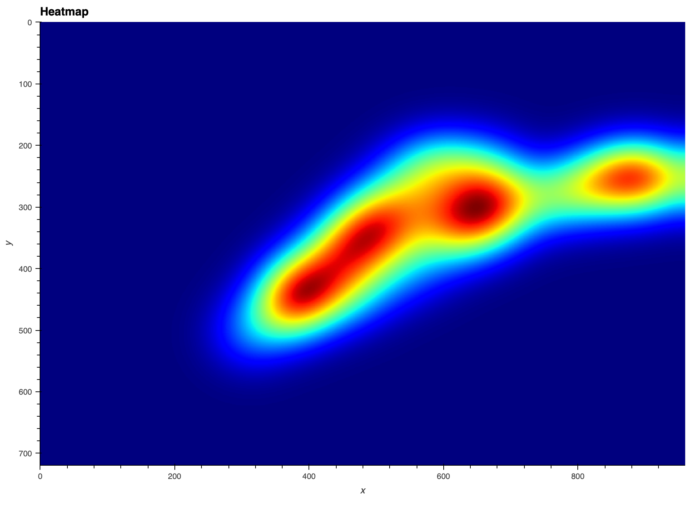

<!DOCTYPE html>
<html>
    <head>
		<meta charset="utf-8">
		<meta name="viewport" content="width=device-width, initial-scale=1.0, maximum-scale=1.0, user-scalable=no">

		<title>reveal.js</title>

		<link rel="stylesheet" href="dist/reset.css">
		<link rel="stylesheet" href="dist/reveal.css">
		<link rel="stylesheet" href="dist/theme/black.css">

		<!-- Theme used for syntax highlighted code -->
		<link rel="stylesheet" href="plugin/highlight/monokai.css">
	</head>
	<body>
		<div class="reveal">
			<div class="slides">
                <section data-markdown
                         data-separator="---"
                         data-separator-vertical=">>>">
					<script type="text/template">
						<!-- .slide: data-background-image="tapir1.jpg" -->
						## Malayan Tapirs in Captivity
						An analysis of locomotion
						---
						### Tapirus indicus
						- Head-body length: 250 – 300 cm. 
						- Weight: 280 – 400 kg. 
						- Population in the Wild: ~2,500 – 3,000 
						- Locomotion: Walks in a zig-zag with snout close to the ground for better smelling. <!-- .element: class="fragment highlight-green" -->
						---
						<!-- .slide: data-background-video="IMG_1281.mp4" -->
						**What percentage of the exhibit does the Malayan tapir traverse?** <!-- .element: class="fragment fade-in" -->
						---
						Motivation
						- Pacing is a stereotypic behavior indicative of stress
							- May be a sign of overall distress due to variables related to captivity (e.g., crowd size and noise, exhibit environmental conditions, etc.)
						---
						### ezTrack
						>>>
						Location tracking using ezTrack
						- Python package developed to track the location of an animal on a frame-by-frame basis
						- Simple and intuitive syntax
						- Detailed output — both visuals and data
						>>>
						ezTrack: Under the hood
						- Creates a reference frame by randomly sampling frames from the video and averaging them
						- Uses the animal's center of mass to determine the animal's location in each frame of the video
						>>>
						```python [2-3|4-5]
							video_dict = {
								'dpath'        : "/Users/drewshives/Documents/cuny_documents/course_materials/animal_behavior",  
								'file'         : 'IMG_1281.mp4',
								'start'        : 0, 
								'end'          : None,
								'region_names' : None,
								'dsmpl'        : 1,
								'stretch'      : dict(width=1, height=1)
							}
						```
						>>>
						
						>>>
						```python [3-5|6]
							tracking_params = {
								'loc_thresh'    : 99.5, 
								'use_window'    : True, 
								'window_size'   : 100, 
								'window_weight' : .9, 
								'method'        : 'abs',
								'rmv_wire'      : True, 
								'wire_krn'      : 5
							}
						```
						>>>
						```python
							location = lt.TrackLocation(video_dict, tracking_params) 

							location.to_csv(os.path.splitext(video_dict['fpath'])[0] 
								+ '_LocationOutput.csv', index=False)
						```
						>>>
						<!-- .slide: data-background-video="video_output.mp4" -->
						---
						### ezTrack: Outputs
						>>>
						- Path Outline
						- Path Heatmap
						>>>
						
						>>>
						
						---
						### Data Analysis
						>>>
						Benchmarks:
						- Maximum length (range of x): 1000 pixels (px)
						- Maximum width (range of y): 350px
						- Approximate area of traversable exhibit: 350,000px$^{2}$
						>>>
						Distance traveled:
						- Maximum distance traveled along x: 623px
						- Maximum distance traveled along y: 306px
						- Total distance traveled in 55 sec.: 2381px
						- Avg. speed: 43px/sec.
						- Approximate area traversed: 190,638px$^{2}$
						- Changes of direction (greater than 1px): 83
						>>>
						Percentage traversed along:
						- x: 62.3%
						- y: 87.4%
						---
						Evidence of pacing rather than exploration
						- Malayan tapirs covered a large amount of the traversable space in a short amount of time with no noticeable goal
						- Little social interaction between the Malayan tapirs in the exhibit
						- Ignoring other enrichment features of the exhibition (water, vegetation, etc.)
						---
						Implications
						- Need for a less stressful environment
							- More time away from crowds, noise, etc.
						- Potential revamp of the exhibit space
							- Size
							- Climate
						---
						<!-- .slide: style="font-size:20px" -->
						### References
						- Arumugam, K. A., Luan, L. Q., Ibrahim, W. N. B. W., Tah, M. B. Mohd. T. @ Mohd., Buesching, C. D., & Annavi, G. (2018). Influence of Enclosure Conditions and Visitors on the Behavior of Captive Malayan Tapir (Tapirus indicus): Implications for Ex Situ Management and Conservation. International Journal of Scientific and Research Publications (IJSRP), 8(7). https://doi.org/10.29322/IJSRP.8.7.2018.p7906
						- Arumugam, K. A., Top, M. Mohd., Ibrahim, W. N. W., Buesching, C. D., & Annavi, G. (2020). Social and Reproductive Behavior of Captive Malayan Tapirs’ (Tapirus indicus): Interactions with Maternal Experience and Environmental Conditions. Scientific Reports, 10(1), 4117. https://doi.org/10.1038/s41598-020-60429-0
						- García, M. J., Medici, E. P., Naranjo, E. J., Novarino, W., & Leonardo, R. S. (2012). Distribution, habitat and adaptability of the genus Tapirus. Integrative Zoology, 7(4), 346–355. https://doi.org/10.1111/j.1749-4877.2012.00317.x
						- Rose, P. (n.d.). Enrichment Methods used for Tapirus indicus (Malayan tapir) at. 8.
						- Rose, P. E., & Roffe, S. M. (2013). A Case Study of Malayan Tapir (Tapirus indicus) Husbandry Practice Across 10 Zoological Collections. Zoo Biology, 32(3), 347–356. https://doi.org/10.1002/zoo.21018
						- Swaisgood, R. R., & Shepherdson, D. J. (2005). Scientific approaches to enrichment and stereotypies in zoo animals: What’s been done and where should we go next? Zoo Biology, 24(6), 499–518. https://doi.org/10.1002/zoo.20066
						- Tapirs (extant/living species; Tapirus spp.) Fact Sheet. c2009-2019. San Diego (CA): San Diego Zoo Wildlife Alliance; [accessed 2022 04 29]. http://ielc.libguides.com/sdzg/factsheets/tapirs
						- Williams, K. D., & Petrides, G. A. (1980). Browse use, feeding behaviour, and management of the Malayan tapir. Journal of Wildlife Management, 44(2), 489–494. https://doi.org/10.2307/3807985
						
					</script>
                </section>
			</div>
		</div>

		<script src="dist/reveal.js"></script>
		<script src="plugin/notes/notes.js"></script>
		<script src="plugin/markdown/markdown.js"></script>
		<script src="plugin/highlight/highlight.js"></script>
		<script src="plugin/math/math.js"></script>
		<script>
			// More info about initialization & config:`
			// - https://revealjs.com/initialization/
			// - https://revealjs.com/config/
			Reveal.initialize({
				hash: true,
				// Learn about plugins: https://revealjs.com/plugins/
				plugins: [ RevealMarkdown, RevealHighlight, RevealNotes, RevealMath.MathJax3 ]
			});
		</script>
	</body>
</html>